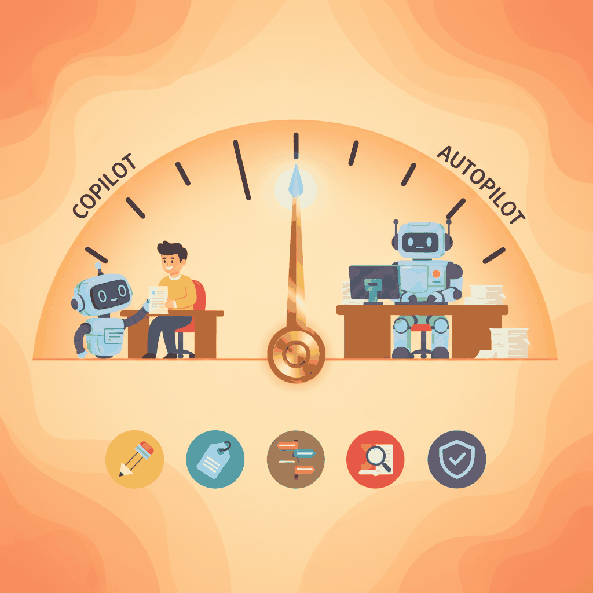
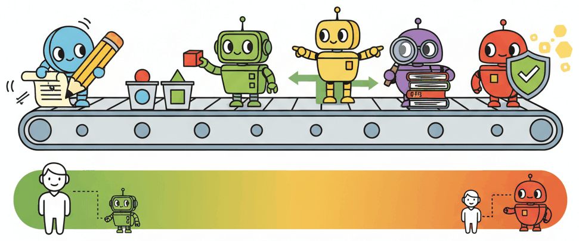

"They promoted me from 'spell checker' to 'autonomous agent' on a Monday. By Wednesday I had booked fourteen flights, cancelled a lease, and apologized to someone's mother-in-law. I am back to spell checking now."
Deploy, Autonomy Cautious AI Agent
The single most consequential design decision in any AI product is how much autonomy to give the model. Most AI features fail not because the model is incapable, but because it was cast in the wrong role. A model asked to make autonomous decisions in a high-stakes domain will produce spectacular failures. The same model, cast as a drafter whose output a human reviews, becomes a productivity multiplier. This section introduces the copilot-to-autopilot spectrum, five concrete role patterns, and a reusable AI Role Canvas that you can fill out before writing a single line of code.
Prerequisites
This section builds on the product mindset from Section 45.1. It assumes familiarity with prompt engineering (Chapter 14), AI agents (Chapter 26), and evaluation (Chapter 34). Readers who have also covered AI strategy (Chapter 31) will find the cross-references to cost and organizational readiness especially useful.

34.2.1 The Copilot-to-Autopilot Spectrum
Every AI feature sits somewhere on a spectrum of autonomy. At one end, the model is a passive assistant that suggests but never acts. At the other end, the model operates independently, making decisions and executing actions without human review. Most successful AI products cluster toward the copilot end of this spectrum, and for good reason.
If you cannot decide where on the autonomy spectrum your AI feature should sit, default to "drafter." A model that proposes outputs for human review is the lowest-risk, highest-learning starting point. You collect real rejection and edit data from day one, which tells you exactly where the model succeeds and fails. Promote to higher autonomy only after your edit rate drops below a threshold you define in advance.
The spectrum breaks into four zones:
- Suggestion only. The model proposes; the human decides and acts. Examples: autocomplete, grammar suggestions, code completions. The human retains full control and the model's errors are cheap to ignore.
- Draft and review. The model produces a complete first draft; the human edits and approves before it reaches the end user. Examples: email drafts, report generation, content summarization. The human is a quality gate.
- Supervised automation. The model acts on its own within defined boundaries, but a human monitors and can intervene. Examples: ticket routing with escalation rules, content moderation with appeal paths. The human is an exception handler.
- Full autonomy. The model decides and executes without human involvement. Examples: spam filtering, real-time ad bidding, simple FAQ responses. This works only when the cost of individual errors is very low and the volume makes human review impractical.
Start at the copilot end and earn your way toward autopilot. Teams that launch with full autonomy often discover failure modes they never anticipated. Teams that start with "draft and review" collect real-world data on where the model fails, build targeted guardrails for those failure modes, and then selectively expand autonomy in areas where the model has proven reliable. This incremental approach aligns with the evaluation-first philosophy from Chapter 34: you cannot safely increase autonomy without the metrics to justify it.
34.2.2 Five Role Patterns
Within the autonomy spectrum, five recurring role patterns appear across successful AI products. Each pattern defines what the model does, where the human fits, and what the typical failure modes look like. Combining these patterns in a pipeline (classifier into router into drafter, for example) is how production systems handle complex workflows while keeping each step simple and testable.
34.2.2.1 Drafter
The model generates a first-pass artifact (text, code, image, plan) that a human then edits, refines, and publishes. This is the most common and safest pattern. The prompt engineering techniques from Chapter 14 are especially relevant here, since draft quality depends directly on prompt design.
- Examples: GitHub Copilot (code drafts), Notion AI (writing drafts), email reply suggestions.
- Human role: Editor and approver. The human brings domain expertise and final judgment.
- Key risk: Automation complacency. Over time, humans rubber-stamp drafts without reading them carefully.
34.2.2.2 Classifier
The model assigns inputs to predefined categories. Classification is one of the most reliable uses of LLMs because the output space is constrained and evaluation is straightforward: you can measure accuracy, precision, and recall against labeled test sets.
- Examples: Support ticket routing, content tagging, sentiment analysis, intent detection.
- Human role: Exception handler. The human reviews low-confidence classifications and edge cases.
- Key risk: Distribution shift. The categories that worked at launch may not cover new types of input that emerge over time.
34.2.2.3 Router
The model selects which tool, API, or downstream process to invoke based on the input. This pattern is central to agentic architectures (Chapter 26), where the agent's primary job is deciding which tool to call rather than generating the final answer itself.
- Examples: Function calling in chat interfaces, API gateway selection, workflow branching.
- Human role: Designer and auditor. The human defines the available routes and reviews routing logs.
- Key risk: Misrouting. A wrong tool call can trigger irreversible side effects (sending an email, deleting a record).
34.2.2.4 Researcher
The model retrieves, synthesizes, and summarizes information from one or more sources. The human consumes the summary and makes decisions based on it. This pattern benefits heavily from RAG (retrieval-augmented generation) and the evaluation strategies in Chapter 34 for measuring retrieval quality and faithfulness.
- Examples: Legal research assistants, competitive analysis tools, literature review bots.
- Human role: Critical consumer. The human validates sources and checks for hallucinated citations.
- Key risk: Hallucinated sources. The model may fabricate references or misrepresent what a source actually says.
34.2.2.5 Verifier
The model checks output (its own or another system's) against defined criteria. Verification is powerful because it is often easier than generation: it is harder to write a correct legal contract than to check whether a given contract contains a specific clause.
- Examples: Code review bots, compliance checkers, fact-checking pipelines, output validators.
- Human role: Arbiter on disagreements. When the verifier flags an issue, a human makes the final call.
- Key risk: False negatives. The verifier misses a genuine problem, creating a false sense of safety.

GitHub Copilot, one of the most commercially successful AI products, has a suggestion acceptance rate of roughly 30%. That means the model is "wrong" (or at least unhelpful) 70% of the time, yet the product generates billions of dollars in annual revenue. The lesson: a product where the model is wrong most of the time can still be enormously valuable, as long as the role (suggestion) matches the reliability level. If Copilot were an autopilot that committed code without review, that 70% miss rate would be catastrophic.
34.2.3 Role Patterns at a Glance
The following table summarizes the five role patterns alongside a fully autonomous agent for comparison, with real-world examples, typical model choices, and risk levels.
| Role | Real-World Example | Typical Model Tier | Risk Level | Human Checkpoint |
|---|---|---|---|---|
| Drafter | GitHub Copilot code suggestions | Large (GPT-4o, Claude Sonnet) | Low to Medium | Review before accept |
| Classifier | Zendesk automatic ticket tagging | Small to Medium (GPT-4o-mini, Haiku) | Low | Audit low-confidence cases |
| Router | ChatGPT function calling dispatch | Medium to Large (tool-use models) | Medium to High | Confirm destructive actions |
| Researcher | Perplexity search and summarization | Large (reasoning models) | Medium | Verify sources and citations |
| Verifier | CodeRabbit pull request review | Medium to Large | Low (flags issues, does not act) | Arbiter on flagged items |
| Autonomous Agent | Fully autonomous customer service | Large with tool use and guardrails | High (no human in loop) | Post-hoc monitoring only |
Who: A product lead at a legal-tech startup building a contract review tool.
Situation: The team built the tool as an autonomous agent: the model read contracts, identified risky clauses, and rewrote them automatically without human intervention.
Problem: Lawyers refused to adopt the product because they could not trust unsupervised rewrites of legal language. Adoption stalled at 12%.
Decision: The team pivoted to a verifier pattern: the model highlights potentially risky clauses and cites the relevant regulation, but the lawyer makes all edits.
Result: Adoption increased from 12% to 78% within three months. The model did less, but the product did more. This is the pattern the strategy chapter (Chapter 31) calls "minimum viable autonomy."
Lesson: Reducing a model's autonomy often increases a product's adoption, because users trust tools they can supervise.
34.2.4 The AI Role Canvas
Before writing any code, fill out an AI Role Canvas: a one-page template that forces you to make explicit decisions about the model's responsibilities, boundaries, and operating constraints. The canvas prevents the common failure mode where a team starts coding before agreeing on what the model should (and should not) do.
The canvas has seven fields:
- Task description. A single sentence describing what the model does. If you cannot state it in one sentence, the scope is probably too broad.
- Human checkpoint. Where in the workflow a human reviews, approves, or overrides the model's output. Even fully autonomous features benefit from periodic human audits.
- Fallback behaviour. What happens when the model fails, times out, or returns low-confidence results. A good fallback is never "crash silently." Typical fallbacks include routing to a human, returning a safe default, or displaying a transparent error message.
- Acceptable error rate. The maximum failure rate your use case can tolerate. A spam filter at 2% false positives is fine; a medical diagnosis tool at 2% false negatives is not. This field links directly to the evaluation thresholds you set in Chapter 34.
- Latency budget. The p95 latency ceiling in milliseconds. A code completion must respond in under 200ms; a research summary can take 10 seconds. The latency budget often determines which model tier is feasible.
- Cost ceiling. The maximum cost per interaction in dollars. This constraint, discussed further in Chapter 31, shapes model selection, prompt length, and whether you can afford multi-step reasoning.
- Data sources and privacy constraints. What data the model can access, what it must never see (PII, credentials, internal secrets), and how data flows through the system.
The following Python class implements the AI Role Canvas as a structured configuration object that you can version-control alongside your codebase. Crucially, the canvas is not just documentation: it drives model selection and prompt construction automatically.
Who: An ML engineer at a mid-size law firm building an AI tool that helps lawyers research case precedents.
Situation: The firm wanted to reduce the 4+ hours attorneys spent on precedent research per case. The engineer needed to define the model's responsibilities before writing any code.
Problem: Without explicit boundaries, early prototypes hallucinated case citations and accessed privileged client communications during retrieval, creating both accuracy and confidentiality risks.
Decision: The engineer filled out the AI Role Canvas with strict constraints: Researcher/Drafter role pattern, 0% tolerance for fabricated citations, lawyer review of every summary, a $0.15 per query cost ceiling, and a hard rule barring access to privileged client data. Fallback behaviour: if retrieval returns fewer than three relevant cases, display a warning and suggest the lawyer broaden search terms manually.
Result: The canvas caught the confidentiality gap before any code shipped. The team scoped retrieval to the internal case database and court records API only, and the evaluation suite (aligned with the evaluation-first approach from Chapter 34) was built directly from the canvas constraints.
Lesson: The canvas forces you to define failure modes and human oversight before you choose a model or write a prompt, turning vague requirements into testable assertions.
34.2.5 From Canvas to Implementation
A filled-out canvas translates directly into engineering decisions. The role pattern determines your prompt structure. The human checkpoint determines your UI flow. The error budget determines your evaluation thresholds. The latency and cost budgets determine your model tier. The privacy constraints determine your data pipeline.
The following code defines the AIRoleCanvas dataclass and then immediately
shows how a filled-out canvas drives model selection and prompt construction. Notice
that 60 lines of structured configuration eliminate dozens of ad-hoc decisions that would
otherwise live in scattered code comments or Slack threads.
# AI Role Canvas: from structured definition to automated engineering decisions
from dataclasses import dataclass, field
from enum import Enum
from typing import Optional, Any
class RolePattern(Enum):
"""The five standard role patterns for AI components."""
DRAFTER = "drafter"
CLASSIFIER = "classifier"
ROUTER = "router"
RESEARCHER = "researcher"
VERIFIER = "verifier"
@dataclass
class AIRoleCanvas:
"""One-page specification for an AI component's role and constraints."""
task_description: str
role_pattern: RolePattern
secondary_roles: list[RolePattern] = field(default_factory=list)
human_checkpoint: str = ""
fallback_behaviour: str = ""
acceptable_error_rate: float = 0.05
latency_budget_ms: int = 3000
cost_ceiling_usd: float = 0.05
data_sources: list[str] = field(default_factory=list)
pii_allowed: bool = False
privacy_notes: str = ""
owner: str = ""
version: str = "0.1.0"
last_reviewed: Optional[str] = None
# Model tier recommendations keyed by role pattern and latency budget
MODEL_TIERS: dict[str, dict[str, str]] = {
"classifier": {"fast": "gpt-4o-mini", "standard": "gpt-4o"},
"drafter": {"fast": "claude-3-5-haiku", "standard": "claude-sonnet-4"},
"router": {"fast": "gpt-4o-mini", "standard": "gpt-4o"},
"researcher": {"fast": "claude-sonnet-4", "standard": "claude-opus-4"},
"verifier": {"fast": "gpt-4o-mini", "standard": "gpt-4o"},
}
ROLE_PROMPTS: dict[str, str] = {
"classifier": "You are a classification engine. Assign the input to exactly "
"one category. Return ONLY the category name and a confidence score.",
"drafter": "You are a drafting assistant. Produce a complete first draft "
"that the user will review and edit.",
"router": "You are a routing engine. Select the most appropriate tool "
"from the provided list. Return the tool name and one sentence of reasoning.",
"researcher": "You are a research assistant. Retrieve relevant information, "
"synthesize a clear summary, and cite your sources explicitly.",
"verifier": "You are a verification engine. Check the output against the "
"given criteria. List any violations with evidence.",
}
def select_model(canvas: AIRoleCanvas) -> str:
"""Pick a model tier based on role pattern and latency budget."""
tier = "fast" if canvas.latency_budget_ms < 1000 else "standard"
return MODEL_TIERS.get(canvas.role_pattern.value, {}).get(tier, "gpt-4o")
def build_system_prompt(canvas: AIRoleCanvas) -> str:
"""Generate a role-specific system prompt with embedded guardrails."""
base = ROLE_PROMPTS.get(canvas.role_pattern.value, "")
constraints: list[str] = []
if not canvas.pii_allowed:
constraints.append("Never include or reference personal information.")
if canvas.fallback_behaviour:
constraints.append(f"Fallback rule: {canvas.fallback_behaviour}")
if canvas.privacy_notes:
constraints.append(f"Privacy: {canvas.privacy_notes}")
if constraints:
base += "\n\nConstraints:\n" + "\n".join(f"- {c}" for c in constraints)
return base
# --- Fill out a canvas and watch it drive real decisions ---
ticket_classifier = AIRoleCanvas(
task_description="Classify incoming support tickets by intent and priority.",
role_pattern=RolePattern.CLASSIFIER,
human_checkpoint="Agent reviews all 'urgent' classifications before escalation.",
fallback_behaviour="Route to general queue if confidence < 0.7.",
acceptable_error_rate=0.08,
latency_budget_ms=500,
cost_ceiling_usd=0.002,
data_sources=["zendesk_tickets", "product_taxonomy_v3"],
pii_allowed=True,
privacy_notes="PII is masked before logging. No ticket content stored beyond 90 days.",
owner="support-platform-team",
version="1.2.0",
last_reviewed="2026-03-15",
)
model = select_model(ticket_classifier)
prompt = build_system_prompt(ticket_classifier)
print(f"Selected model: {model}")
print(f"Latency budget drove selection: {ticket_classifier.latency_budget_ms}ms < 1000ms = fast tier")
print(f"\nGenerated system prompt:\n{prompt}")AIRoleCanvas dataclass defines role constraints, and select_model and build_system_prompt translate those constraints into concrete engineering choices. The ticket classifier's 500ms latency budget automatically selects a fast-tier model, while its PII and fallback fields inject guardrails into the system prompt.34.2.6 Common Mistakes in Role Assignment
Three patterns of failure recur when teams assign roles to their AI components:
- The "do everything" anti-pattern. The model is asked to classify, research, draft, and verify all in a single prompt. This produces unreliable results because each role requires a different prompt structure, different evaluation criteria, and different failure handling. Instead, decompose the workflow into discrete steps, each with its own role and canvas. The agent architectures in Chapter 26 provide patterns for composing multiple roles into a pipeline.
- Premature autopilot. The team skips the copilot phase and launches with full autonomy because the demo looked good. As Section 45.1 demonstrated, demo performance does not predict production performance. Start with human-in-the-loop, measure the model's real-world error rate, and only remove the human checkpoint when the data justifies it.
- Missing fallback. The canvas's "fallback behaviour" field is left blank or filled with "N/A." Every model call can fail: the API times out, the response is malformed, the confidence is too low. Without an explicit fallback, these failures propagate to the user as crashes, blank screens, or (worse) silent hallucinations.
Once users grow accustomed to a copilot workflow, there is organizational pressure to "just let the AI handle it" and remove the human checkpoint. Resist this pressure unless your evaluation metrics clearly show the model can handle the increased autonomy. Increasing autonomy without increasing monitoring is a recipe for the kind of silent quality degradation described in Section 45.1.
- The copilot-to-autopilot spectrum defines your product's risk profile. Start at the copilot end, collect data on real-world failure modes, and expand autonomy only where metrics justify it.
- Five role patterns cover most AI use cases. Drafter, classifier, router, researcher, and verifier each have distinct prompt structures, evaluation criteria, and failure modes. Combine them in pipelines for complex workflows.
- The AI Role Canvas is a pre-coding deliverable. Seven fields (task description, human checkpoint, fallback behaviour, acceptable error rate, latency budget, cost ceiling, data sources and privacy) force explicit decisions before you write a single line of integration code.
- Decompose rather than aggregate. A single model trying to fill every role produces unreliable results. Break workflows into discrete steps, each with its own role and canvas.
- Fallback behaviour is not optional. Every model call can fail. An explicit fallback (route to human, return default, show warning) prevents silent failures from reaching users.
Exercises
For each scenario, name the appropriate AI role pattern and the single property that drives the choice: (a) a code review assistant for senior engineers; (b) a tax-form pre-fill tool for consumers; (c) an autonomous customer-service agent that issues refunds; (d) a marketing copy generator inside a CMS.
Answer Sketch
(a) Copilot: experienced engineers want suggestions, not autonomous edits; the human stays in control because review accuracy depends on judgment. (b) Drafter / Suggestor: pre-fills are easy to verify, error tolerance is moderate, and the user reviews before submission. (c) Bounded autopilot: full autonomy is acceptable only with strict limits (refund cap, audit log, circuit breakers); the role is "agent under guardrails", not free agent. (d) Generator with human-in-the-loop final accept: copy is high-volume, low-risk per item, but brand consistency requires editorial review. The driver in each case is error tolerance combined with reversibility: the more catastrophic and irreversible an error, the further toward "copilot" the role moves.
You launch a copilot, then add an "auto-apply" button as an opt-in shift toward autopilot. Predict: (a) what fraction of users opt in within the first month; (b) what happens to per-user error tolerance once they opt in; (c) the most likely cause of a public incident if the feature is misused.
Answer Sketch
(a) Typically 5-20% of users opt in within a month; "power users" adopt fast, the long tail stays cautious. (b) Error tolerance drops sharply: an opt-in user expects auto-apply to "just work" and treats failures as bugs, not as part of the normal probabilistic distribution. The blast radius per error grows because users review less. (c) The most likely incident: a model update silently changes auto-apply behavior, the eval gate didn't catch the regression, and now thousands of automated actions run with the new behavior before anyone notices. Mitigation: per-feature opt-in metric and quality SLO; freeze auto-apply on regression triggers automatically.
Sketch a 6-row role canvas (as a YAML or table) for a hypothetical "AI meeting summarizer." The canvas should specify role, autonomy level, per-action error budget, recovery mechanism, observability, and escalation path.
Answer Sketch
role: drafter
autonomy: produces draft, user must accept
error_budget: 5% factual error per summary, 10% style/tone
recovery: user edits inline; "regenerate" available; rejection logs send to triage
observability: per-meeting accept-rate, edit-distance, user-rated quality
escalation: meetings flagged confidential auto-bypass and require manual notes; failures past 10% threshold trigger oncallThe canvas is useful as a contract artifact: every PM, ML engineer, and ops engineer aligns on what "shipped" actually means. Drift from the canvas is treated as a design decision, not a bug. The same shape generalizes to any AI feature and is worth filling out before code.
List three product failures that come from picking the wrong AI role for the use case (rather than from a bad model), and the role re-assignment that fixes each.
Answer Sketch
(1) Autopilot used where users wanted control: a code editor that auto-rewrites your function instead of suggesting a diff. Users feel violated. Re-assign to copilot with explicit accept. (2) Copilot used where users wanted automation: a CRM that asks the user to confirm every email categorization, when users wanted the inbox to triage itself. Re-assign to bounded autopilot with a daily summary. (3) Drafter used where verification cost > generation cost: an AI legal-clause proposal where reviewing the suggestion takes longer than writing the clause from scratch. Re-assign to a search/lookup pattern (retrieval over precedents) instead of generation. The general lesson: model quality is necessary but not sufficient; product fit comes from matching role to user expectation and to the cost structure of verification.
Show Answer
Show Answer
Show Answer
Further Reading
Human-AI Collaboration
AI Product Design
Agentic Systems and Tool Use
What Comes Next
With the model's role defined through your AI Role Canvas, Section 45.3: Risk and Feasibility Assessment gives you the tools to validate whether the role you chose is technically feasible, economically viable, and compliant before you write a single line of prototype code.